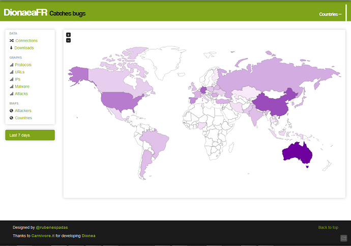

Front Web to Dionaea log analysis.
[*] Technologies:
- Python 2.7.3
- Django 1.4
- Jquery 1.7.2
- Bootstrap Framework 2.1.1
- jVectorMap 1.0
- Kendo-UI v2011.3.1129
- SQLite3
[*] Requeriments:
pip install Django
pip install pygeoip
pip install django-pagination
pip install django-tables2
django-tables2-simplefilter:
https://github.com/benjiec/django-tables2-simplefilter
[*] Install
Copy /opt/dionaea/var/dionaea/logsql.sqlite to DionaeaFR root directory
Download GeoIP.dat and GeoLiteCity.dat from https://www.maxmind.com/en/home and copy in DionaeaFR/static
Change STATICFILES_DIRS in DionaeaFR/Dionaea/settings.py to absolute paths of DionaeaFR/static
Change TEMPLATE_DIRS in DionaeaFR/Dionaea/settings.py to absolute paths of DionaeaFR/Templates
python manage.py collectstatic
python manage.py runserver
Access to http://localhost:8000 in browser.
[*] Changelog
- Add transport, type and protocol filters in connections table.
Suggestions?
Designed by @rubenespadas